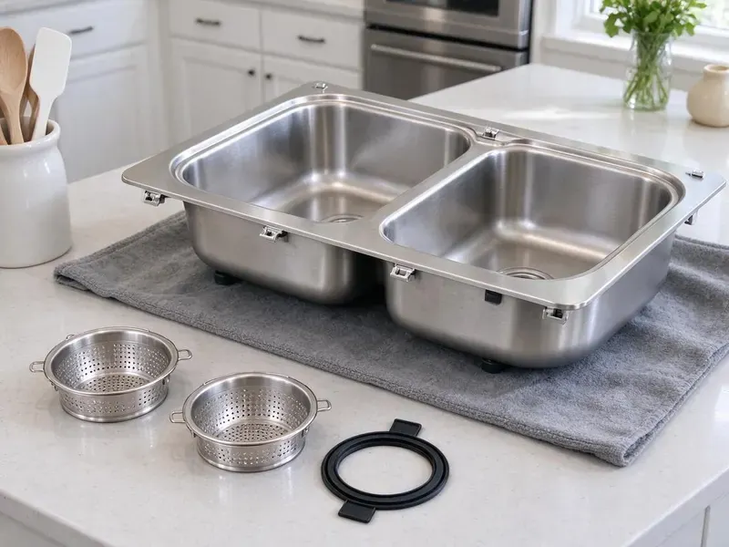
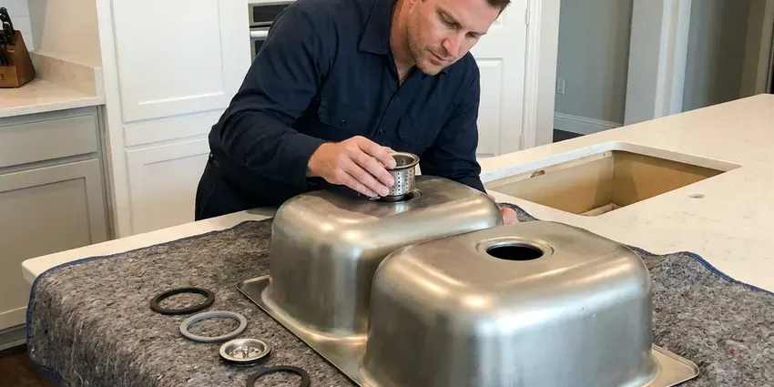
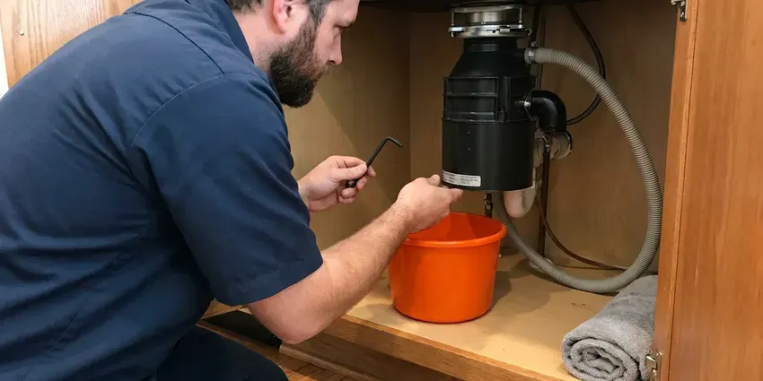
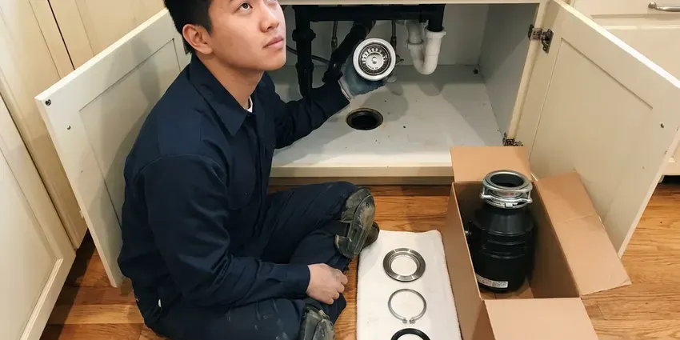
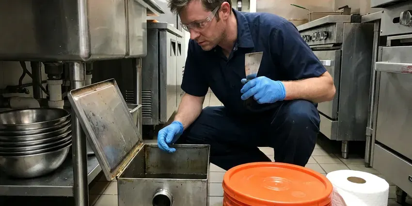
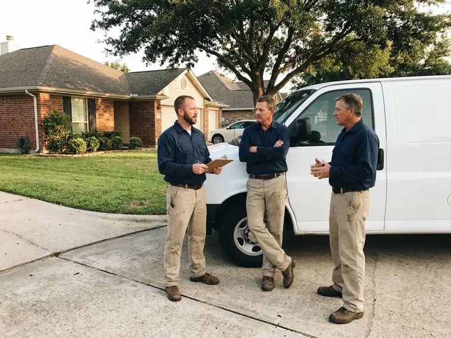

Grease Trap Installation in Fairmont, WV
Opening or remodeling a kitchen in Fairmont, WV? We size, set and connect grease interceptors that pass inspection the first time.
- Fast Commercial Scheduling
- Upfront Pricing
- Licensed & Insured
- Permit and Inspection Support
Need a New Grease Trap Installed in Fairmont, WV?
Our team is ready to provide expert grease trap installation for your business.
Commercial Grease Trap Installation for Kitchens in Fairmont, WV
When it comes to grease trap installation, GJK Plumbing provides complete services throughout Fairmont, WV. Our certified plumbers ensure that your new system is sized correctly, installed to meet all local regulations, and functions properly from day one.
Our expertise includes:
- Compliance with West Virginia plumbing and environmental codes.
- Hydromechanical interceptors from Zurn, Watts, Schier and Endura
- Code-compliant installations

Additional Kitchen Plumbing Services in Fairmont, WV
Our kitchen plumbing services in Fairmont, WV cover sinks, disposals, dishwashers, and grease traps so your kitchen keeps running without backups or leaks.


Professional kitchen sink installation, Fairmont

Garbage Disposal Repair in Fairmont

Garbage Disposal Installation near Fairmont

Grease Trap Cleaning near Fairmont

Customers
Why Choose GJK Plumbing for Grease Trap Installation in Fairmont, WV?
Our commercial crews know what local inspectors look for, from flow control devices to accessible lids. That means fewer delays and a system that stays compliant for years.
- Odor Control, Properly sealed and maintained grease traps greatly reduce unpleasant odors common in commercial kitchens.
- Experienced Plumbers, Our technicians are well trained in the specific methods and requirements for installing various types and sizes of grease traps.
- Accurate Sizing, We calculate gallons per minute for every connected sink and dishwasher before choosing a unit.
Citywide Coverage
No matter where your commercial kitchen is located in Fairmont, our team is equipped to provide prompt and professional grease trap installation services. We understand the local infrastructure and specific requirements for businesses throughout Fairmont.
Experienced Team
The GJK Plumbing team consists of licensed and insured plumbers who regularly undergo training on the latest grease trap technologies and installation techniques. You can trust our experience for a reliable and code-compliant installation every time.
Safety-First Approach
Safety and code compliance are paramount in every grease trap installation we undertake. We adhere to all OSHA standards and local Fairmont regulations, ensuring a safe work environment and a system that passes inspection without issue.
Trusted Certified Fairmont Plumbing Services Professionals
At GJK Plumbing, we take pride in providing certified plumbing services throughout Fairmont, WV. Backed by leading industry credentials, our experienced plumbers combine technical skill with genuine customer care. Whether it is repair, installation, or maintenance, we follow strict safety and quality standards to deliver lasting results you can trust.
Call Us Now PHCC Plumbing Contractor Recognition
PHCC Plumbing Contractor Recognition Better Business Bureau (BBB) Accreditation
Better Business Bureau (BBB) Accreditation Angi Certified Pro
Angi Certified Pro ISO 9001 Quality Management Certification
ISO 9001 Quality Management CertificationReliable Grease Trap Installation Services in Fairmont, WV
Commercial Grease Trap Installation in Fairmont
For restaurants, cafeterias, and any food service business in Fairmont, a well-functioning grease trap is non-negotiable. We specialize in installing commercial-grade grease traps designed to handle high volumes of FOG, making sure your kitchen operates smoothly and compliantly. Our installations are matched to the specific needs and capacity requirements of your establishment, preventing costly backups and environmental issues.

Gravity Grease Trap Installation in Fairmont
Gravity grease traps are a common and effective solution for many commercial kitchens in Fairmont. These passive systems use the natural separation of FOG from water due to density differences. Our plumbers are experts in installing gravity grease traps, ensuring proper sizing, correct inlet and outlet piping, and easy access for future cleaning and maintenance to get the most from their efficiency.
Hydromechanical Grease Trap Installation in Fairmont
Hydromechanical grease traps sit under or near sinks and use baffles and flow control to separate grease from water. They are common in small cafes, coffee shops and quick-service restaurants with tight space. We install units from Zurn, Watts, Schier and Endura sized by gallons per minute. Each install includes a flow control fitting and proper venting to keep the trap working as designed. These units need frequent cleaning, so we place them where staff can reach the lid without trouble.
Large Outdoor Grease Interceptor Installation in Fairmont
For high-volume commercial kitchens in Fairmont, large outdoor grease interceptors are often required by code. These substantial units are installed underground and designed to manage significant amounts of FOG before wastewater enters the municipal sewer system. We handle the whole process, including excavation, precise placement, connection, and final inspection, ensuring a robust and compliant installation.
In-Ground Gravity Interceptor Installation in Fairmont, WV
Larger restaurants and high-volume kitchens often need an outdoor gravity interceptor. These concrete or polyethylene tanks typically range from several hundred to over 1,500 gallons. We excavate, set the tank on a stable base, connect inlet and outlet piping and install manhole risers. Rocky, steep terrain is common across West Virginia, and many homes sit on hillsides where drainage and slope movement affect buried lines. We plan excavation equipment around the ground conditions we find on site. A properly installed interceptor can go far longer between pump-outs than an indoor trap.
New Restaurant Build-Out Grease Traps in Fairmont
If you are opening a new restaurant, the grease trap is often a key part of plan review. We work with your architect or contractor to size the unit and show it on plumbing plans. We then install it during rough-in so it is ready for inspection. Getting the trap right early avoids expensive changes after the slab is poured. We also coordinate with the city's pretreatment staff when they require a review.
Zurn Grease Trap Installation in Fairmont
Zurn is a well-known brand for reliable plumbing fixtures, including grease interceptors. GJK Plumbing is experienced in installing various Zurn grease trap models, from compact under-sink units to larger capacity models for busy kitchens. We make sure each Zurn product is installed according to manufacturer specifications and local codes, providing a durable and effective solution for your FOG management in Fairmont.

Hydro-Mechanical Grease Trap Installation in Fairmont, WV
Hydro-mechanical grease traps, also known as automatic grease removal units, offer an active solution for FOG management in Fairmont, WV. These units often include internal baffles and flow control mechanisms to enhance separation efficiency. We provide expert installation of various hydro-mechanical models, ensuring all electrical and plumbing connections are correctly made for optimal performance and automated FOG removal.
Grease Trap Installation Near Me in Fairmont, WV
Don't let FOG cause a major headache for your commercial kitchen. For reliable grease trap installation near me, call GJK Plumbing today. We offer transparent pricing, professional service, and a commitment to helping Fairmont businesses maintain compliant and functional plumbing systems.
Our crews are based nearby and can visit your site quickly for a sizing review. We bring the equipment needed for indoor or outdoor installs. You get one point of contact from planning to final inspection.
GJK Plumbing at a Glance
- Fully licensed plumbing team covering Fairmont, WV
- Same-day appointments and 24/7 emergency response
- Clear written estimates, no hidden fees
- 4.8-star rated by 832+ West Virginia customers
Fairmont Map
Fairmont Information
- Population
- 18,155
- Area codes
- Local
- Service area
- Fairmont and communities within 40 miles
- Nearby
- Bridgeport, Morgantown, Brookhaven, Clarksburg
Municipal pretreatment rules and high restaurant volume make careful sizing and sound installation of grease interceptors essential for food businesses in Fairmont, WV. Rocky, steep terrain is common across West Virginia, and many homes sit on hillsides where drainage and slope movement affect buried lines.
Expert Services
Trust our professionals for reliable GJK Plumbing solutions in Fairmont, WV.
Our Specialized Plumbing Services in Fairmont, WV
At GJK Plumbing, we provide a complete range of plumbing services across Fairmont, WV. From leak detection to full system installations, our team ensures fast, precise, and affordable service for both residential and commercial properties. Explore our core services below:


How Our Grease Trap Installation Process Works in Fairmont, WV
Our simple process ensures your new grease trap is installed efficiently and correctly, minimizing disruption to your business in Fairmont.
Request a Quote
Call us at (681) 223-3607 to discuss your grease trap installation needs. We will gather information about your commercial kitchen or property and schedule an on-site assessment.
Site Assessment
Our expert plumbers will visit your Fairmont location to evaluate the space, determine the optimal grease trap size, and identify the best placement. We consider factors like kitchen layout, water usage, and local code requirements.
Permit Acquisition
For commercial grease trap installations in Fairmont, permits are often required. We help you with the necessary paperwork and ensure all local permits are secured before commencing work.
Frequently Asked Questions About Grease Trap Installation in Fairmont
The cost of grease trap installation in Fairmont, WV varies widely based on the type and size of the trap, whether it's an indoor or outdoor unit, and the complexity of the installation. For a small under-sink hydro-mechanical unit, plan on between $1,500 and $4,000. Larger outdoor gravity interceptors can range from $7,000 to $20,000 or more, including excavation and concrete work.
The timeline for grease trap installation depends on the project's scope. A simple under-sink unit might take a few hours. Larger outdoor gravity interceptors, which involve excavation and more extensive plumbing, can take anywhere from one to several days. We always aim to minimize disruption to your business operations.
Yes, commercial grease trap and interceptor installations generally require a plumbing permit and inspection. Some cities also require approval from their pretreatment or wastewater department.
The lifespan of a grease trap depends on its type, material, and how well it's maintained. Steel grease traps may last 10 to 15 years, while durable fiberglass or polyethylene units can last 20 to 30 years or even longer. Regular cleaning and proper usage are key to lengthening its lifespan.
Signs you might need a new grease trap include frequent sewer backups, persistent foul odors coming from drains, slow drainage throughout your kitchen, or if your current unit is visibly corroded or leaking. If your existing trap is old and no longer meets current local codes in Fairmont, an upgrade is also advisable.
Determining the correct grease trap size involves calculating your kitchen's wastewater flow rate, fixture count, and peak operating hours. Our experienced plumbers will conduct a thorough assessment of your Fairmont business to recommend the appropriate size and type of grease trap that meets local codes and your operational needs.
We install a variety of reputable grease trap brands, including Zurn, Big Dipper, Schier, and Rockford Separators. Our plumbers are familiar with the specifications and installation requirements of numerous manufacturers, making sure you get a high-quality, durable system tailored to your needs.
Grease trap installation is a complex commercial plumbing task that requires specialized knowledge, tools, and adherence to strict local codes. Attempting a DIY installation can lead to costly errors, code violations, and potential health hazards. It is always best to hire licensed and experienced plumbers like GJK Plumbing.
What People Are Saying About Our Plumbing Experts?

Laura S.
I scheduled a water heater replacement, and the team made the process smooth and affordable. The new unit works perfectly, and they cleaned up after completing the job.
Water Heater Replacement · Morgantown, WV
Emily R.
I called GJK Plumbing for plumbing repair, and the technician was fast, polite, and thorough. They explained the problem clearly and fixed it the same day. I will definitely hire them again. Highly recommended!
Plumbing Repair · Bridgeport, WVSofia M.
Two new toilets installed in one visit, no mess left behind, and the tech even adjusted a faucet he noticed was dripping. Fair pricing and really friendly.
Toilet Installation · Bridgeport, WV
Robert G.
The trenchless sewer replacement saved our front yard. They walked us through the camera inspection footage first so we knew exactly what we were paying for.
Sewer Line Replacement · Clarksburg, WV
Mark T.
When our office needed drain cleaning, GJK Plumbing provided quick, reliable service. The plumber arrived on time and made sure every drain flowed perfectly before leaving. Very satisfied.
Drain Cleaning · Fairmont, WV
Patricia H.
We had a slab leak that two other companies could not find. GJK Plumbing located it in under an hour, explained our options, and the price matched the quote to the dollar.
Slab Leak Repair · Morgantown, WV